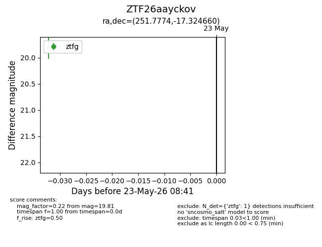
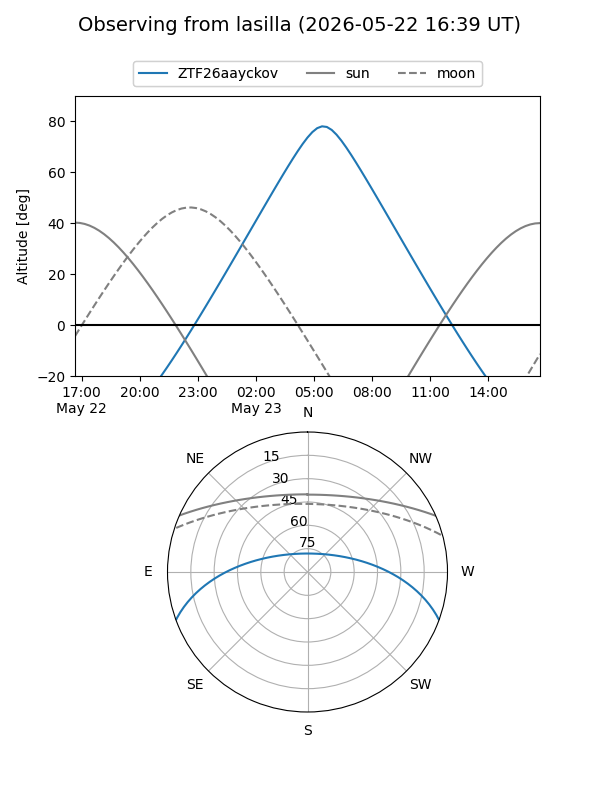
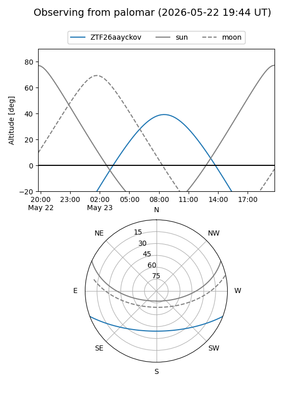

ZTF26aayckov
Target ZTF26aayckov at 2026-05-23 08:42
Aliases and brokers:
lsst-FINK: link
lsst-Lasair: link
lsst-ALeRCE: link
ztf-FINK: link
ztf-Lasair: link
ztf-ALeRCE: link
alt names
ZTF26aayckov (ztf,fink_ztf)
Coordinates:
equatorial (ra, dec) = 251.7774,-17.32466
equatorial (HMS+DMS) = 16:47:06.58,-17:19:28.78
galactic (l, b) = (2.0089,+17.62823)
Flags:
Photometry:
last ztfg=19.81
1 ztfg detections
Lightcurve

Visibility


Additional plots